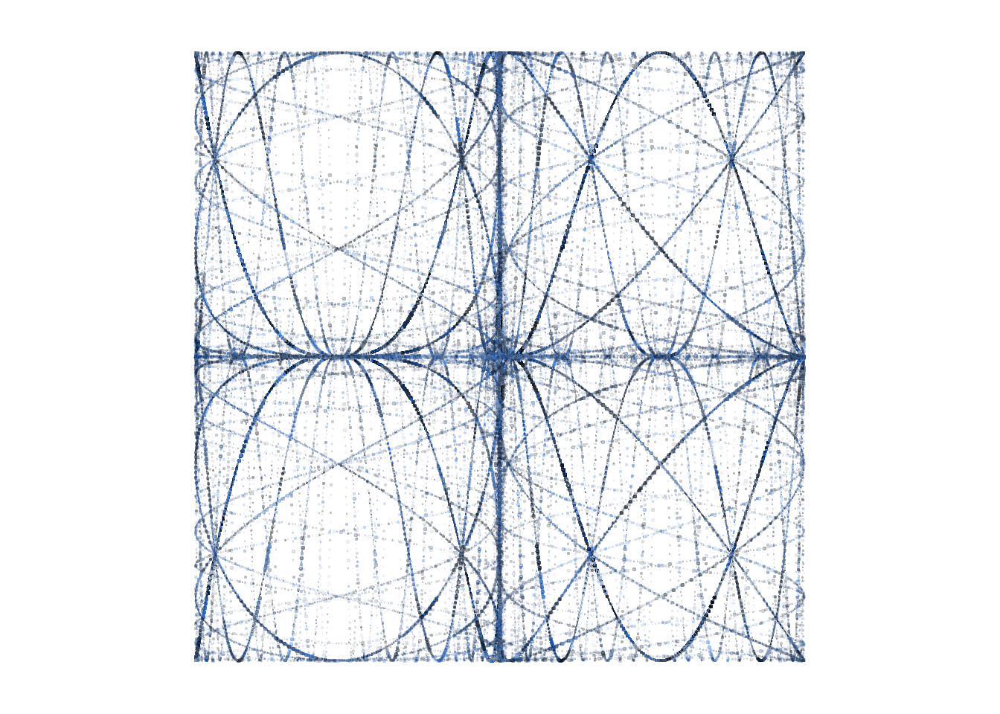

t = seq(0,10,0.01)
x = sin(2*pi*t)
y = cos(3*pi*t)
plot(x,y,type="l",asp=1)
This post describes one of my favourite pieces of creative coding. The process followed here is more-or-less the process by which I came to the final image, although there was a a lot more trial and error the first time around! The work is based around Lissajous curves, which are widely used in mathematical art and take their name from Jules Lissajous who extensively explored them in the 19th century.
An image search for ‘Lissajous art’ or similar will show you a lot of ways people have used Lissajous curves, or more generally harmonographs, to make beautiful images.
Here’s the final output we’re aiming for in this post:

Lissajous curves are the shapes traced out by sinusoidal motion in two dimensions. They are characterised by the equations:
\[\begin{align*} x & = A\times\sin(f_x t - \delta_x) \\ y & = B\times\cos(f_y t - \delta_y) \\ \end{align*}\]
Where \(A\) and \(B\) are amplitudes, \(f_x\) and \(f_y\) are the frequencies of the motion and \(\delta_x\) and \(\delta_y\) the phase shift.
It is simple to draw a Lissajous curve in R using:
t = seq(0,10,0.01)
x = sin(2*pi*t)
y = cos(3*pi*t)
plot(x,y,type="l",asp=1)
By visualising the motion in both dimensions it should be clear how the shapes arise:
t = seq(0,2,0.01)
x = sin(2*pi*t)
y = cos(6*pi*t)
limits = c(-1,1)
for(i in seq(0,2,l=100)){
plot(x,y,type="l",asp=1,xlim=1.2*limits,ylim=1.2*limits)
lines(x=c(sin(2*i*pi),sin(2*i*pi),-1.1),
y=c(-1.1,cos(6*pi*i),cos(6*pi*i)),pch=20,type="o",lty="dashed")
}
By changing the frequencies we can generate some familiar shapes:
for(i in 1:4) for(j in 2:5){
plot(x = sin(i*pi*t),
y=cos(j*pi*t),
type="l",asp=1,xlim=limits,ylim=limits,
main=sprintf("i=%d; j=%d",i,j))
}There are lots of interesting things to do with Lissajous curves. Eg we can overlay lots of curves with different frequencies.
plot(NA, xlim=limits,ylim=limits,asp=1)
for(i in 1:4) for(j in 2:5){
points(x = sin(i*pi*t),y=cos(j*pi*t),type="l")
}
Now lets add a few more curves, think about how the colour and intensity should depend on the frequency, remove the axes and annotation etc. This image isn’t great but you can start to see how you’d make something interesting..
par(mar=c(1,1,1,1))
plot(NA, xlim=limits,ylim=limits,asp=1,axes=F,ann=F)
for(i in 1:10) for(j in -10:10){
points(x = sin(i*pi*t),
y = cos(j*pi*t),type="l",
lwd=5/(abs(i-j)+2),
col=hsv(h=.5+j/20,
s=1/(abs(i-j)+2),
v=1-1/(abs(i-j)+2),
alpha=1/(abs(i-j)+2)))
}We can make the frequencies increase as a geometric rather than an arithmetic sequence. Here the \(x\) frequency is fixed at 5 and the \(y\) frequency varies from \(2\times 2^{-4}\) to \(2\times 2^4\). Again this output isn’t especially pretty but its the set of curves we ultimately use for the final output.
t = seq(0,10,0.001)
par(mar=c(1,1,1,1))
limits=c(-1,1)
plot(NA, xlim=limits,ylim=limits,asp=1,axes=F,ann=F)
for(i in 5) for(a in (-4:4)){
points(x = sin(i*pi*t),
y = cos(2*2^a*pi*t),type="l",
lwd=2,
col=hsv(h=.6,
s=.5,v=.5,
alpha=1/(abs(a)+1)))
}Now for the part where we diverge from classic Lissajous curve shape.
The next image is the same as the previous one, except that I have replaced \(x\) with \(x^3\) and \(y\) with \(y^3\). I also swapped the \(x\) and \(y\) axes because the image looked nicer that way around.
Raising the \(x\) and \(y\) positions to the third power retains the range of the curve but bunches up the curves along the axes and makes the shapes more iteresting.
t = seq(0,10,0.001)
par(mar=c(1,1,1,1))
limits=c(-1,1)
plot(NA, xlim=limits,ylim=limits,asp=1,axes=F,ann=F)
for(i in 5) for(a in (-4:4)){
points(y = sin(i*pi*t)^3,
x = cos(2*2^a*pi*t)^3,type="l",
lwd=2,
col=hsv(h=.6,
s=.5,v=.5,
alpha=1/(abs(a)+1)))
}
The other major innovation is to plot points of random sizes instead of lines, to create the textured effect in the final image.
Something else interesting happens when we switch to points instead of lines; since each path has the same number of points the shorter paths become denser so they are more prominent in the image:
t = seq(0,50,l=1e4)
par(mar=c(1,1,1,1))
limits=c(-1,1)
plot(NA, xlim=limits,ylim=limits,asp=1,axes=F,ann=F)
for(i in 5) for(a in (-4:4)){
points(y = sin(i*pi*t)^3,
x = cos(2*2^a*pi*t)^3,type="p",
cex=.5*runif(1000),
pch=20,
col=hsv(h=.6,
s=runif(1000),v=runif(1000),
alpha=runif(1000)/(abs(a)+1)))
}
This is close to the final image! Tweaking some parameters can improve the balance between the curves, and lead us to something we are happy with.
The complete self-contained code for the final image is shown below.
I have tweaked the point sizes a bit so they depend on which curve is being drawn, and used a normal distribution for the point sizes to get a longer tail of larger points.
The point hue is random, there is an off-white background and the number of points per curve is 30000. The frequency is always 5 in the \(y\) dimension, but varies from \(2\times 3^-4\) to \(2\times 3^4\) in the \(x\) dimension.
set.seed(10072022)
N=3e4
t = seq(0,300,l=N)
par(mar=2*c(1,1,1,1),bg="#fafafa")
limits = c(-1,1)
plot(NA, xlim=limits,ylim=limits,ax=F,an=F)
for(j in 2*3^(seq(-4,4,1))){
points(y = sin(5*pi*t)^3,
x = cos(j*pi*t)^3,
type="p",
pch=20,
cex=rnorm(N)^1.0*.4*cos(t*pi/4+pi/3)+.05*(j==6)+.1*(j==2), # Random size
col=hsv(h=rnorm(N,.7,.1)%%1, # Random hue
s=runif(N,0,1), # Random saturation
v=runif(N,0,1), # Random value
alpha=runif(N)))} # Random alpha
I am delighted with this image. The left and right panels make a lovely counterpoint to each other, as does the relationship between the two ‘major’ paths in each. The near-symmetry within each panel is an accident but I think it adds a lot to the final composition. ‘Cubing’ the Lissajous curves makes them familiar but not too familiar, in my opinion purely sinusoidal shapes can be a bit dull.
The intersections between paths are particularly pleasing, and the density and distribution of the points feels very organic. You could of course change the random number seed to get a different arrangement of sizes and colours.
The only thing I don’t like so much is the very high density of points in the dead centre of the image. I could try to artificially lighten this area but I don’t think that would help much. I also wonder if the overall colour and density is a little too uniform, but I can’t imagine how this could be improved.